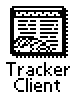

What if you had a Newton WWW Server and nobody came? I mean, maybe they would want to, but how are they going to know your IP address?
We have a solution. When you go online, your Newton can now register with a tracker. People who want to find Newtons online simply visit the tracker and they'll find a link to your Newton if its still active.
NPDS Tracker consists of two applications that communicate with each other.. Tracker Client (which is a NPDS plugin) and Tracker Server which is a MacOS CGI/daemon hybrid.
When NPDS starts up, Tracker Client is activated by the NPDS architecture and told to register. It sends, using a special protocol, information needed to find your Newton on the net as well as a description of your Server. The Tracker Server records this information for later use. Your NPDS continues to start up and that's it, from your Newton's end of things.
On the other end of things, Tracker Server is busy. People who want a hyperlinked list of Newton servers are accessing it with their WWW browsers while it is also constantly monitoring the status of each Newton that has registered with it. If a set period elapses where Tracker Server can't connect to your Newt and retrieve a special page (served by Tracker Client), it is removed from the list of active Newton servers. The ususal period for this expiration is 45 minutes to one hour and a Newton is usually given 3 chances to respond before being removed.
Use you favorite package installer to load Tracker Client onto the same store as all the other NPDS components. If you wish, install a NPDS Tracker Configuration package to pre-set all the prefs for you. Once Tracker Client is configured, it functions automatically on server startup.
 Manually
setting up Tracker Client is also easy:
Manually
setting up Tracker Client is also easy:
You'll notice you also have a checkbox called "Register With A Tracker". If this box is unchecked when NPDS starts up, Tracker Client will NOT log into its specified Tracker Server.
You can easily remove yourself from a Tracker (after an expiration period has elapsed) by de-selecting this checkbox. Conversely, if you are running your server and decide after starting it up that you DO want to be on the tracker, turn this on and tap the "UP" icon at the bottom of the window to manually transmit your data to the Tracker Server.
The Slash-Circle icon is for cancelling a connection that seems to have gone awry. I have never needed to use it but it's still there in case of emergency.
Once you're ready to go, open up nHTTPd and start it up as usual. The status line will progress from IDLE to INIT and pause for a bit. A NIE status dialog will pop open twice (that's Tracker doing its job), then the status line will read READY and you'll be all set. To verify that your server has registered, point your browser to http://your.newton.net/traq/ and you'll see a page pointing you to the tracker. Click the link and see what develops: if all went well, your Newton is listed happily on the tracker!
|
Connected |
After a few minutes (15-30 minutes), Tracker Server will come by and ask for a special response from the /traq/ directory. If its request is fulfilled, your Newton's lease on life at the tracker will be renewed for one expiration cycle. You'll know this has happened because the status icon of nHTTPd will change from the standard Connected icon to the Tracked icon. This verification will continue until your Newton no longer responds to requests from the Tracker Server. |
Tracked |
No major problems have been reported. If you're on a long time, NPDS can tend to slow down, or if you have a very active server. In either of these cases, you may find yourself wrongly removed from the Tracker. To get back online, just open the Tracker client and tap the UP icon.
The Tracker server is a CGI that runs under any MacOS Web Server that supports the standard Mac CGI model (Personal Web Sharing, WebSTAR, NetPresenz, etc). It'll run on a 68K but due to some minor glitches, it's not supported on that platform. If you're interested, email me at matvon@kagi.com and perhaps we can get you set up.